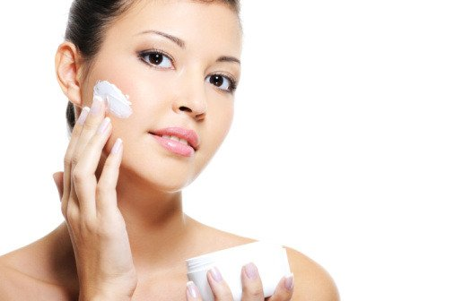
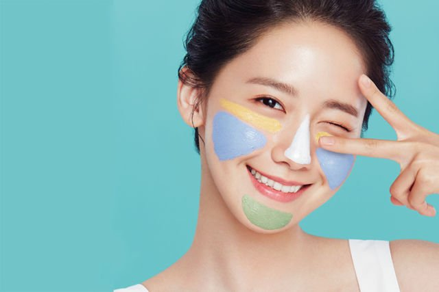

PROTECTING
Protecting selalu dikaitkan dengan apa yg disebut UVA (gelombang ultraviolet panjang) dan UVB (gelombang ultraviolet pendek).
Hampir seluruh permukaan bumi ini terkena paparan sinar UVA (gelombang ultraviolet panjang) dalam jumlah besar sepanjang hidup kita. Sinar UVA menyumbang kurang lebih 92%dari radiasi UV yang mencapai permukaan bumi. Meskipun mereka tidak sekuat dibanding UVB, paparan UVA adalah 30 – 50 kali lebih besar lho. Dengan intensitas yang relatif sama pada semua siang hari sepanjang tahun, dan dapat menembus awan maupun kaca.UVA menembus kulit lebih dalam daripada UVB, dan UVA akan menembus lapisan kulit lebih dalam dan dapat menyebabkan penuaan kulit berupa keriput dan noda hitam. Menurut penelitian dari World Health Organization, paparan sinar UVA ini bahkan bisa menyebabkan kanker kulit. Sinar UVA juga tidak terasa panas oleh kulit sehingga dapat menembus lebih dalam ke kulit.
Kulit yang memerah dan terasa terbakar sinar matahari, cenderung merusak lapisan epidermis kulit yang lebih dangkal sehingga disebut dengan gelombang ultaviolet pendek (UVA B). Intensitas yang bervariasi menurut musim, lokasi, dan waktu. Pembentukan vitamin D pada tubuh adalah hasil paparan sinar matahari yang mengandung sinar UVB. Namun, terpapar sinar UVB terlalu lama akan membakar kulit dan merusak melanin, yang mengakibatkan kulit yang lebih menggelap. Namun sinar UVB ini tidak dapat menembus kaca.

Untuk melindungi wajah dari UVA A dan UVA B tentunya gunakan Sun protecting dengan SPF dan PA untuk meminimalisir adanya penuaan atau kulit yang menggelap, meskipun berada di dalam ruangan atau cuaca sedang mendung, sinar UVA tetap bisa menembus kaca lho dan tidak dipengaruhi cuaca sehingga tetap dapat menjangkau kalian. Sedangkan sinar UVB tidak, jadi ketika memilih sun protecting pastikan yang berlabel SPF dan PA.
PF (Sun Protection Factor) sendiri menunjukkan tingkat perlindungan terhadap UVB yang menggelapkan kulit atau membuat kulit menjadi merah terasa terbakar, SPF itu pada umumnya kalian tahun yang seperti SPF 10, 15, 20, 25, 30 dst. SPF dengan level berapan pun diatas SPF 15 sebenarnya akan melindungi kulit dari sinar UVB. Bedanya SPF rendah dan tinggi hanya terletak pada jenis kulit kalian masing – masing, misal kalian berkulit terang terbakar setelah 15 menit, yang berkulit sedang atau sawo matang akan terbakar setelah 15 menit, dan yang berkulit gelap akan terbakar setelah 20 menit. Well.. seharusnya kita bersyukur ya memiliki kulit cenderung sawo matang agar lebih meminimalisir terjadinya kanker kulit. Sedangkan PA (Protection Grade of UVA) menunjukkan tingkat perlindungan terhadap UVA yang menyebabkan penuaan kulit. Namun apabila kalian ingin terhindar dari UVA serta UVB, kalian bisa memilih produk dengan label broad spectrum yang mencakup perlindungan untuk UVA dan UVB.
Jadi ketika kalian menemukan sun protecting dengan label SPF dan PA (baik PA+, PA++, atau PA+++), produk tersebut menawarkan perlindungan dari radiasi UVB dan UVA. Sama seperti SPF, semakin banyak tanda "+" pada PA, semakin tinggi tingkat perlindungan sun protecting tersebut terhadap radiasi UVA.
Lalu apa perbedaan sunblock dan sunscreen ?
Sunscreen , sesuai dengan namanya screen atau penyaring, berbentuk lotion cair yang hanya berfungsi sebagai penyaring sinar matahari. Lotion yang masuk ke dalam kulit akan menyerap radiasi UV sebelum mencapai lapisan kulit kalian dan merusaknya, tapi masih ada sebagian sinar matahari yang terserap oleh tubuh. Tekstur suncreen sendiri lebih tipis dan akan tidak terlihat kasat mata saat diaplikasikan.
Sunblock, sesuai dengan namanya block atau penghalang. Sunblock berfungsi sebagai dinding penghalang kulit dari sinar matahari, mengandung mineral seperti zinc oxide atau titanium oxide tekstur sunblock lebih kental, berwarnah putih susu, terlihat jelas oleh mata, dan pastinya akan terasa lengket ketika diaplikasikan. Sunblock rekomendasi perlindungan terbaik jika kalian memiliki aktivitas berjam – jam di bawah sengatan matahari, seperti berenang atau bermain di pantai.
Bagaimana aturan memakai sun protecting ?
Pertama, setelah memakai pelembab wajah, diamkan sekitar 5 – 10 menit atau sampai pelembab dirasa telah menyerap ke dalam kulit. Kemudian lapisi menggunakan sun protecting 15 – 30 sebelum kalian beraktifitas. Dan jangan gunakan pada saat terkena paparan sinar matahari.
Kedua, walaupun kalian telah memakai sun protecting kalian harus tetap memakai perlengkapan seperti kacamata hitam anti UV, topi bertepi lebar, mengenakan pakaian yang tertutup pada saat kalian melakukan aktifitas di luar ruangan.
Ketiga, jangan pernah merasa cukup puas setelah kalian memakai perlengkapan dan sun protecting lalu kalian berpanas – panasan sesuka kalian. Ingat UVA bisa menembus kaca dan awan apalagi cuma sekedar SPF dan kacamata hitam anti UV ??Tetaplah berteduh ya, terutama pada pukul 09.00 – 16.00
Keempat, gunakan kembali setiap dua jam, atau segera setelah berenang walaupun sun protecting kalian bersifat anti air akan tetap terhapus ketika anda mengeringkan dengan handuk, dan ketika kalian berkeringat berlebihan.
Skincare Pendukung
Kalian pasti sering dengar istilah booster, ampoule, serum, essence, emulsion dan masker / sleeping mask. Mungkin beberapa jenis skincare yang disebutkan beberapa dari kalian pasti tahu, namun beberapa namanya begitu asing bagi kalian. Sekali lagi ini merupakan tambahan skincare dari 4 dasar merawat wajah di atas, jadi kalian tidak harus untuk membeli semua produk skincare tambahan ini

Booster, sekilas tekstur booster sama dengan toner tapi booster memiliki fungsi yang berbeda dengan toner, yaitu untuk memberi nutrisi tambahan yang dibutuhkan kulit dan mempersiapkan kulit untuk menerima produk skincare yang akan dipakai setelahnya. Booster sendiri merupakan pre essence dan pre serum, awal tahap sebelum kalian memakai serum dan essence agar performa produk skincare kamu yang kurang signifikan menjadi maksimal.
Ampoule hampir sama dengan serum tetapi ampoule lebih memiliki konsentrasi lebih tinggi dibanding skincare tambahan lainnya dan efeknya pun terlihat lebih cepat dibandingkan produk skincare lainnya, sehingga menyebabkan harganya mahal dengan ukuran yg kecil. Dengan kandungan propolis hampir setengah komposisi membuat ampoule cenderung diformulasikan untuk antiaging.
Serum, merupakan skincare yang intensif mengatasi suatu masalah kulit yang bekerja secara target untuk kebutuhan kulit yang lebih spesifik. Seperti serum yang mengandung vitamin C untuk mencerahkan kulit, atau serum yang mengandung snail extract yang dikenal dapat memperbaiki struktur kulit dan memperkecil pori-pori, dan serum antiaging. Serum cocok digunakan untuk semua jenis kulit.
Essence, tekstur essence lebih kental dibandingkan serum, dia memiliki konsentrasi yang lebih rendah juga dibandingkan serum. Fungsinya menutrisi dan melembapkan kulit wajah secara maksimal. Hasilnya, kulit idaman bisa lebih mudah kamu dapatkan. Beberapa brand yang memiliki produk essence namun tidak memiliki produk serum atau sebaliknya. Beberapa lagi memiliki keduanya.
Emulsion, disebut juga sebagai pre moisturizer yang teksturnya cukup cair seperti susu yang berfungsi untuk melembapkan kulit. Karena teksturnya yang mild inilah yang membuat emultion cocok dipakai untuk kulit kering dan berminyak.
Mask / Sleeping Mask, agar kulit meregenerasi dengan baik maka gunakan mask atau sleeping mask dirangkaian terakhir perawatan wajah anda. Sleeping mask sendiri berbentuk gel yang dipakai dan didiamkan semalaman dan dibilas dipagi hari. Mask / Sheet Mask kaslian bisa langsung kalian lepas setelah kalian pakai selama 10 – 15 menit.
Bagi kalian yang harus memakai make-up tiap hari, ini dia urutan memakai skincare :
Pagi hari gunakan Cleansing – Toning (Hydrating Toning) – (Booster) – (Ampoule) – (Serum) – (Essence) – (Emulsion) – Moisturizer – Sun Protecting.
Malam hari gunakan Double Cleansing – Double Toning (Exfloating Toning 3x seminggu dan Hydrating Toning) – (Booster) – (Ampoule) – (Serum) – (Essence) – (Emulsion) – Moisturizer - (Mask / Sleeping Mask).
Untuk yang tidak memakai make-up, pagi hari gunakan Cleansing – Toning (Hydrating Toning) – (Booster) – (Ampoule) – (Serum) – (Essence) – (Emulsion) – Moisturizer – Sun Protecting.
Malam hari gunakan Cleansing – Double Toning (Exfloating Toning 3x seminggu dan Hydrating Toning) – (Booster) – (Ampoule) – (Serum) – (Essence) – (Emulsion) – Moisturizer – (Mask / Sleeping Mask).
Tiap step yang akan kalian ambil berikan jeda ya misal 3 sampai 8 menit agar skincare yang kalian pakai menyerap dengan baik dan berfungsi dengan maksimal.
Gimana girls, tahapan skincare umumnya ada 4. Kuncinya kalian mesti telaten dan nggak boleh males ataupun bolong – bolong dalam melakukan tiap stepnya. Kalau kalian mempunyai budget yang berlebih, boleh kok kalian menambahkan skincare pendukung :). Well.. yang jelas jangan sampai membuat tabungan kamu kekuras ya atau bahkan minus. Kalian bisa membeli produknya satu persatu tiap bulannya, karena sejatinya skincare ini engga langsung abis begitu aja, bahkan jika kalian irit bisa sampai 3 bulan pemakaian bahkan bisa lebih lho.Think smart ya girls.
Jangan lupa pola hidup yang sehat juga biar cantik didalam juga cantik diluar, jadi auranya makin positif dan terpancar.
KEMBALI MEMBACA TIPS LAIN